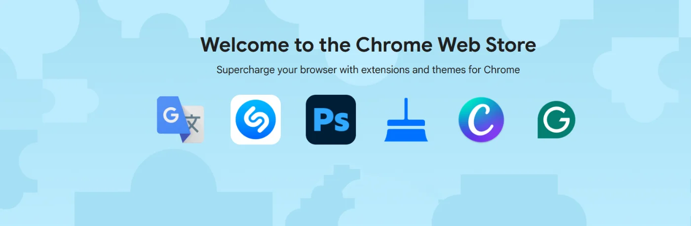
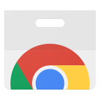

Chrome Web Store
官方谷歌浏览器扩展程序与主题应用商店。

https://chromewebstore.google.com/1. AdGuard 广告拦截器
一款无与伦比的广告拦截扩展，用以对抗各式广告与弹窗。可以拦截 Facebook、YouTube 和其它所有网站的广告。
AdGuard AdBlocker
Unmatched adblock extension against advertising and pop-ups. Blocks ads on Facebook, YouTube and all other websites.
https://chromewebstore.google.com/detail/adguard-adblocker/bgnkhhnnamicmpeenaelnjfhikgbkllg
2. 沉浸式翻译：双语对照网页翻译 & PDF 文档翻译
沉浸式网页双语翻译扩展，支持 PDF 翻译、双语 Epub 电子书制作、YouTube / Netflix / Udemy 等平台双语字幕，支持 DeepL / Google 等多个翻译服务，免费使用。
Immersive Translate: Web Page & PDF Translation
Bilingual web page translation, also supports PDF, Epub eBook, Video subtitles translation, free to use.
https://chromewebstore.google.com/detail/immersive-translate-web-p/bpoadfkcbjbfhfodiogcnhhhpibjhbnh
3. 为 YouTube 自动播放高清视频
设置你的默认 YouTube™ 视频质量，支持根据帧率自动匹配高清与最高分辨率播放。
YouTube Auto HD + FPS - Chrome Web Store
Automatically set the video quality on YouTube according to its FPS!
https://chromewebstore.google.com/detail/youtube-auto-hd-+-fps/fcphghnknhkimeagdglkljinmpbagone
4. Auto Refresh Plus | Page Monitor
使用强大的页面监控与关键词检测功能自动刷新页面，适合抢票、库存变化及状态盯屏场景。
Auto Refresh Plus | Page Monitor
Refresh page automatically with powerful page monitor features.
https://chromewebstore.google.com/detail/auto-refresh-plus-page-mo/hgeljhfekpckiiplhkigfehkdpldcggm
5. Save.to - Save to Notion
Save the Web to Notion — 一键将网页正文、链接与结构化字段剪藏保存到你的 Notion 数据库。
Save.to - Save to Notion - Chrome Web Store
Save the Web to Notion
https://chromewebstore.google.com/detail/saveto-save-to-notion/ldmmifpegigmeammaeckplhnjbbpccmm
6. Dark Reader
适用于所有网站的暗色主题。关爱眼睛，就使用 Dark Reader 进行日常及夜间浏览。
Dark Reader
Dark mode for every website. Take care of your eyes, use dark theme for night and daily browsing.
https://chromewebstore.google.com/detail/dark-reader/eimadpbcbfnmbkopoojfekhnkhdbieeh
7. 草料二维码 - 快速生码和解码工具
草料二维码官方开发的免费工具插件，提供简单、专业、快捷的当前网页二维码生成与图片解码功能。
草料二维码-快速生码和解码工具
草料二维码官方开发的免费工具插件，提供简单、专业、快捷的二维码生成和解码功能。
https://chromewebstore.google.com/detail/草料二维码-快速生码和解码工具/moombeodfomdpjnpocobemoiaemednkg